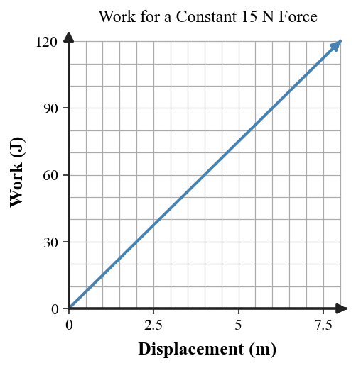
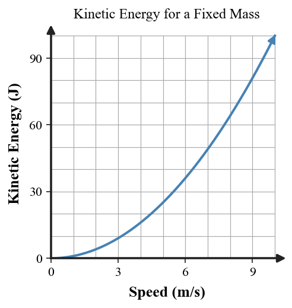
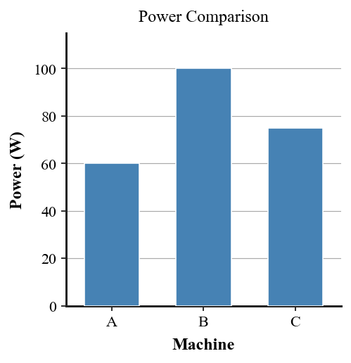

Practice focus: Determine when work is done and use work, power, gravitational potential energy, and kinetic energy in familiar situations.
Define work in the physics sense.
What two ideas must be connected for a force to do work on an object?
A student holds a heavy box motionless. Classify this as work or no work on the box by the student’s upward force.
A student lifts a box upward. Classify this as work or no work by the lifting force.
Define power in words.
Which energy type depends on motion?
Which energy type increases when an object is raised higher in a gravitational field?
Complete the work relationship: $W=\_\_\_\_ imes\_\_\_\_$.
Complete the power relationship: $P=W/\_\_\_\_$.
State the formula for gravitational potential energy.
State the formula for kinetic energy.
Use the diagram to identify which scene clearly has force and displacement in the same direction.
A horizontal force of 20 N moves a crate 5 m in the same direction. Calculate the work done.
A machine does 1000 J of work in 7 s. Calculate its power.
A 4 kg object is lifted 5 m. Use $g=10\, ext{m/s}^2$ to calculate the gravitational potential energy gained.
A 4 kg object moves at 3 m/s. Calculate its kinetic energy.
A motor does 900 J of work in 15 s while another does the same 900 J in 9 s. Compare their power outputs and identify which is more powerful.
A worker carries a box horizontally at constant height while exerting an upward support force. Explain why the upward force does no work on the box in the simplified model.
Use the work-versus-distance graph to determine how work changes as displacement increases for a constant force.

Use the kinetic-energy-versus-speed graph to compare the change in KE when speed doubles.

Use the power bar chart to rank three machines that complete different amounts of work per second.

A 5 kg backpack is raised 2 m in 4 s. First calculate the PE gained, then determine the average power required for the lift.
A 2 kg cart moves at 3 m/s, then speeds up to 6 m/s. Calculate the initial and final kinetic energies and describe the change.
A force acts opposite a sliding object’s displacement. State whether the work by that force is positive, negative, or zero, and explain the sign conceptually.
A student says, “If I get tired holding a heavy box, I must be doing physics work on the box.” Critique the claim using force and displacement.
A car doubles its speed. Explain why its kinetic energy becomes four times as large, using the structure of $KE=\frac12mv^2$.
Two machines do the same work, but one finishes in half the time. Explain how their power differs and why work and power are not the same quantity.
A ball rolls down a ramp. Connect gravitational potential energy, kinetic energy, work by gravity, and motion without claiming that energy is created.
Design a simple investigation comparing the power of two students climbing the same stairs. Identify the measurements, equations from this unit, how you would compare results, and one source of uncertainty.
A small cart is launched by a compressed spring and then slows on carpet. Build an energy-and-work explanation that traces stored energy, kinetic energy, work by friction, and thermal transfer. Include what evidence you would measure.